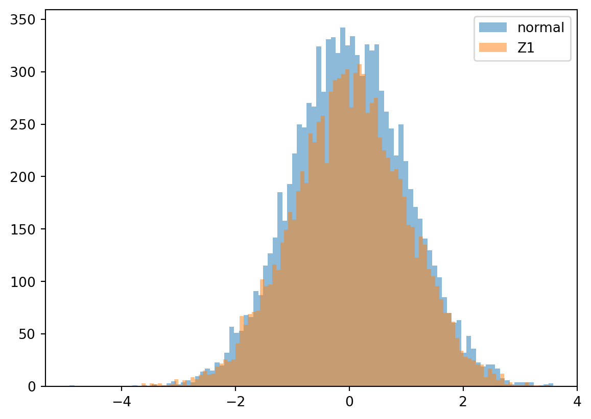
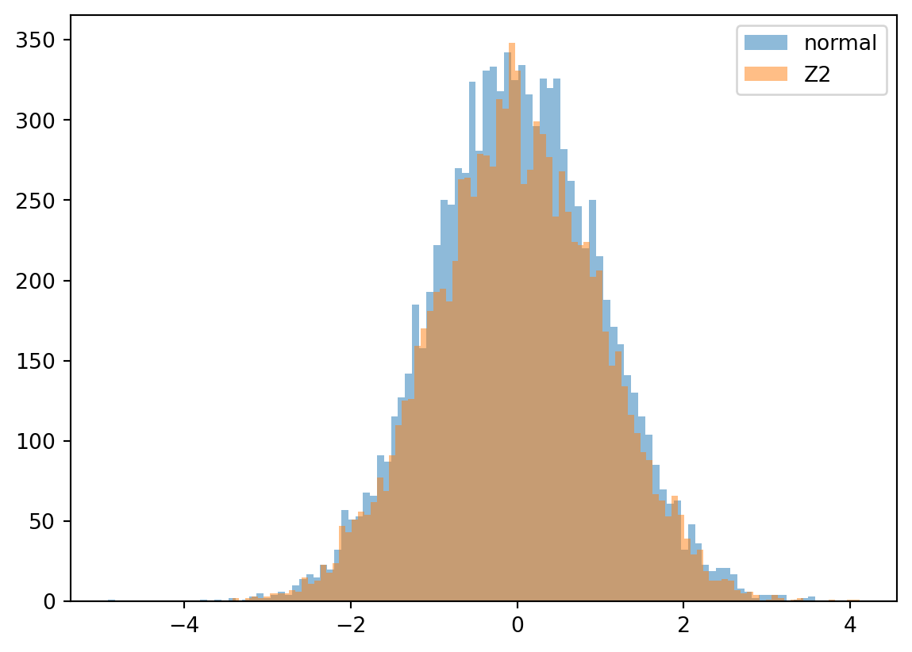
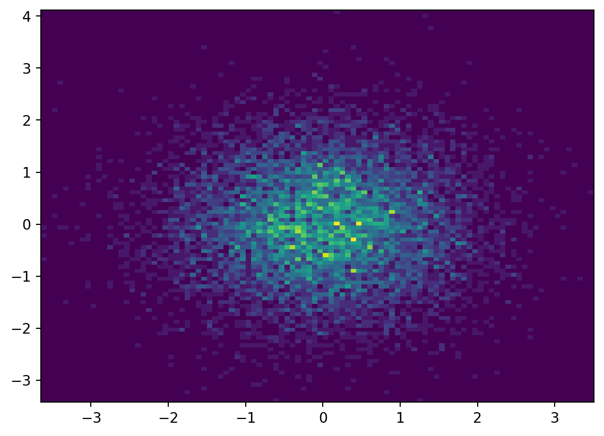

import numpy as np
import matplotlib.pyplot as plt
rg = np.random.default_rng()
N = 10000
bins=100
U1 = rg.uniform(0, 1, N)
U2 = rg.uniform(0, 1, N)
normal = rg.normal(0, 1, N)
Z1 = [np.sqrt(-2 * np.log(u[0])) * np.cos(2 * np.pi * u[1]) for u in zip(U1, U2)]
Z2 = [np.sqrt(-2 * np.log(u[0])) * np.sin(2 * np.pi * u[1]) for u in zip(U1, U2)]Chapter 2 Computer Experiments
Computer experiments
2.1 The Box-Muller Method
Let \(U_1 \sim U(0,1)\) and \(U_2 \sim U(0,1)\). Define random variables
\[ Z_1 = \sqrt{-2\log(U_1)} \cos(2 \pi U_2) \] and \[ Z_2 = \sqrt{-2\log(U_1)} \sin(2 \pi U_2). \]
Generate \(10000\) samples of \((Z_1, Z_2)\) and plot the histograms of each random variable.
plt.hist(normal, bins=bins, label='normal', alpha=0.5)
plt.hist(Z1, bins=bins, label='Z1', alpha=0.5)
plt.legend(loc='upper right')
plt.plot()[]
plt.hist(normal, bins=bins, label='normal', alpha=0.5)
plt.hist(Z2, bins=bins, label='Z2', alpha=0.5)
plt.legend(loc='upper right')
plt.plot()[]
plt.hist2d(Z1, Z2, bins=bins, density=True)
plt.plot()[]
\[ \newcommand{\Cov}{\operatorname{Cov}} \newcommand{\Var}{\operatorname{Var}} \newcommand{\E}{\operatorname{E}} \newcommand{\P}{\operatorname{P}} \newcommand{\rank}{\operatorname{rank}} \newcommand{\trace}{\operatorname{trace}} \newcommand{\sgn}{\operatorname{sgn}} \newcommand{\F}{\mathcal{F}} \newcommand{\G}{\mathcal{G}} \newcommand{\qed}{\tag*{$\square$}} \newcommand{\erf}{\operatorname{erf}} \newcommand{\sgn}{\operatorname{sgn}} \newcommand{\1}{\mathbb{1}} \def\iddots{{\kern3mu\raise1mu{.}\kern3mu\raise6mu{.}\kern3mu \raise12mu{.}}} \]
2.2 Simulating Brownian Motion
class Brownian:
def __init__(self, samples):
covariance = [[min(i,j) for i in range(1, samples)] for j in range(1, samples)]
self.__A = (1/np.sqrt(samples))*np.linalg.cholesky(covariance)
return
def path(self, rg = np.random.default_rng()):
return np.r_[0, self.__A.dot(rg.normal(0, 1, samples -1))]
samples = 100
x_axis = np.linspace(0, 1, samples)
brownian = Brownian(samples)
for _ in range(100):
plt.plot(x_axis, brownian.path())
plt.title('Brownian motion')
plt.show()
2.3 Simulating the Ornstein-Uhlenbeck Process
class OU:
def __init__(self, samples):
covariance = [ [ (1/2)*np.exp(-(1/samples) * np.abs(i -j))*(1 - np.exp(-(2/samples)*min(i, j))) for i in range(1, samples)] for j in range(1, samples)]
self.__A = np.linalg.cholesky(covariance)
return
def path(self, rg = np.random.default_rng()):
return np.r_[0, self.__A.dot(rg.normal(0, 1, samples-1))]
ou = OU(samples)
for _ in range(100):
plt.plot(x_axis, ou.path())
plt.title('Ornstein-Uhlenbeck Process')
plt.show()
class OUStationary:
def __init__(self, samples):
covariance = [ [ (1/2)*np.exp(-(1/samples) * np.abs((i -j))) for i in range(samples)] for j in range(samples)]
self.__A = np.linalg.cholesky(covariance)
return
def path(self, rg = np.random.default_rng()):
return self.__A.dot(rg.normal(0, 1, samples))
ouStationary = OUStationary(samples)
for _ in range(100):
plt.plot(x_axis, ouStationary.path())
plt.title('Stationary Ornstein-Uhlenbeck Process')Text(0.5, 1.0, 'Stationary Ornstein-Uhlenbeck Process')
2.4 Simulating Fractional Brownian Motion
class FractionalBrownian:
def __init__(self, samples, H):
def cov(i,j):
scale = 1/samples
i, j = scale*i, scale*j
return (1/2) *(i**(2*H) + j**(2*H) - np.abs(i -j)**(2*H))
covariance = [[cov(i, j) for i in range(1, samples)] for j in range(1, samples)]
self.__A = np.linalg.cholesky(covariance)
return
def path(self, rg = np.random.default_rng()):
return np.r_[0, self.__A.dot(rg.normal(0, 1, samples-1))]
for H in [0.1, 0.5, 0.9]:
fractionalBrownian = FractionalBrownian(samples, H)
for _ in range(100):
plt.plot(x_axis, fractionalBrownian.path())
plt.title(f'Fractional Brownian H = {H}')
plt.show()


2.5 Simulating the Brownian Bridge
class BrownianBridge:
def __init__(self, samples):
def cov(i, j):
scale = 1/samples
s = min(i,j)*scale
t = max(i,j)*scale
return s*(1 - t)
covariance = [[cov(i,j) for i in range(1, samples -1)] for j in range(1, samples -1)]
self.__A = np.linalg.cholesky(covariance)
return
def path(self, rg = np.random.default_rng()):
return np.r_[np.r_[0, self.__A.dot(rg.normal(0, 1, samples-2))], 0]
brownianBridge = BrownianBridge(samples)
for _ in range(100):
plt.plot(x_axis, brownianBridge.path())
plt.title('Brownian Bridge')
plt.show()
class BrownianBridgeAlt:
def __init__(self, samples):
self.__brownian = Brownian(samples)
return
def path(self, rg = np.random.default_rng()):
path = self.__brownian.path(rg)
return [ path[i] - (i/samples) * path[-1] for i in range(len(path)) ]
brownianBridgeAlt = BrownianBridgeAlt(samples)
for _ in range(100):
plt.plot(x_axis, brownianBridgeAlt.path())
plt.title('Brownian Bridge Generated from Brownian Motion')
plt.show()
seed = 2
path_a = brownianBridge.path(rg = np.random.default_rng(seed))
path_b = brownianBridgeAlt.path(rg = np.random.default_rng(seed))
plt.plot(x_axis, path_a, label='(a)')
plt.plot(x_axis, path_b, label='(b)')
plt.legend(loc='upper right')
plt.show()
plt.plot(x_axis, path_b - path_a)
plt.plot(x_axis, x_axis)
plt.title('difference between brownian bridge paths')
plt.show()